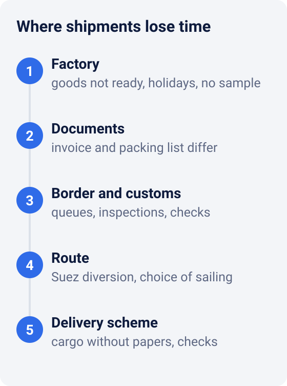
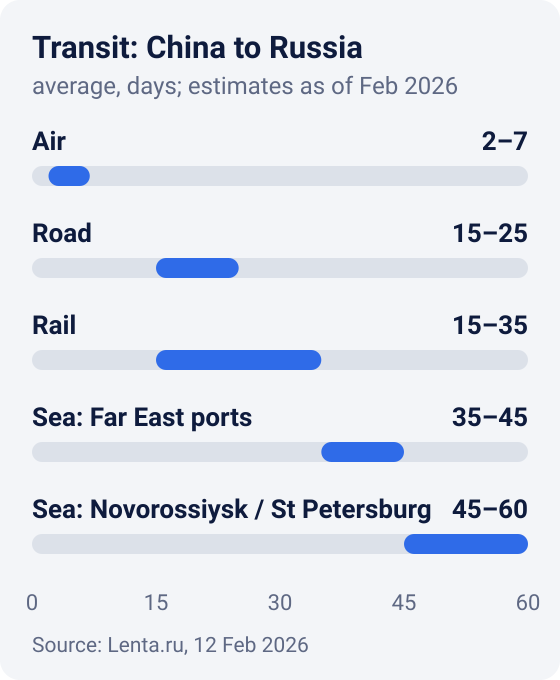
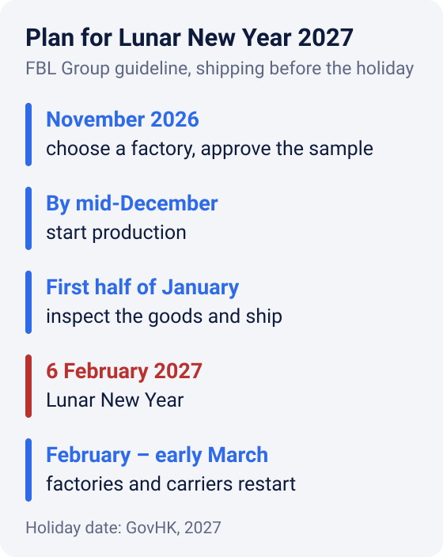

Why shipments from China get delayed and how to protect your deadlines
Why do shipments from China get delayed? Almost always for clear reasons. Time is lost at five points: the factory, the documents, the border, the route and the delivery format itself. If you know them in advance, you can build the buffer into your plan instead of looking for someone to blame when the goods are already late.
Below we go through each point, transit time estimates as of February 2026, a buffer calculation and an order plan for Lunar New Year 2027.

1. The goods are not ready on time
A "shipping delay" often starts at the factory: the order simply isn't ready. The factory runs several orders at once, the sample wasn't approved in time, materials ran short. The shipment slips by weeks before any transport is even booked.
Chinese holidays are a separate risk. Lunar New Year 2027 falls on 6 February3. In 2026 the official break lasted a little over a week: it started on 15 February and work resumed on 24 February1. As of late October 2026, the official 2027 schedule had not been published yet. In 2026, carriers switched to a reduced schedule even before the break, and many businesses postponed shipments until after the holiday1.
The October holidays move deadlines too. In October 2025 they caused queues several kilometres long at the borders of China, Kazakhstan and Russia1.
What to do: approve the sample before production, write the batch ready date into the contract and ask about progress well before shipping day.
2. Mistakes in documents
A shipment with inaccurate documents waits until they are fixed. Typical mistakes: the invoice description doesn't match the packing list, or the weight and package count don't match the actual goods. Another one is a value given as a single lump sum without a breakdown.
Cargo data requirements are getting stricter:
- European Union. The carrier or importer files safety and security data in advance in ICS2 through the Entry Summary Declaration (ENS). Every consignment is risk-assessed on that basis before arrival6.
- United States. Duty-free de minimis entry for shipments of $800 or less is suspended indefinitely. All such shipments, except those sent by international mail, now go through formal or informal entry7.
- China. New export rules have applied in China since autumn 2025; among other things, shipping under someone else's export licence is prohibited1.
What to do: check the invoice, packing list and carton marks before shipping. The easiest moment is at goods receipt, when everything has been counted and packed.
3. Border and customs
On overland routes to Russia, a lot of time is lost at border crossings. One logistics company estimates that after new measures by Russia and Kazakhstan, crossing the border had come to take three to four times longer1.
A queue can form without inspections too. On 3 September 2026 at Zabaikalsk, trucks on the Chinese side backed up for about 20 kilometres. According to an eyewitness, the cause was a delay in issuing entry permits2.
What to do: keep a buffer for the border and don't schedule sales right at the estimated arrival date. The urgent part of an order can go by air.
4. Route: sea and Suez
Ocean transit time depends on the ship's route. Going around Africa instead of through the Suez Canal adds 9 to 14 days to an Asia - Europe voyage4. After the Red Sea crisis began, many lines sailed exactly that way.
By September 2026 some carriers had returned to the canal. According to the Suez Canal Authority, CMA CGM, Maersk, MSC, Hapag-Lloyd and COSCO have all returned to varying degrees5. The return is partial and depends on security, so check the routing of your specific sailing when booking.
The figures below are for the China - Russia route only; for Europe or the US, ask your forwarder for the current transit time on your lane. Here is how long shipments from China to Russia took according to logistics companies, as of February 20261:

| Mode | Days | Best for |
|---|---|---|
| Air | 2-7 | urgent, small and valuable cargo |
| Road | 15-25 | balance of time and cost on overland routes |
| Rail | 15-35 | large overland shipments |
| Sea via Far East ports | 35-45 | large volumes where price matters more than speed |
| Sea via Novorossiysk or St Petersburg | 45-60 | the same, delivered to European Russia |
5. Cargo or fully documented delivery: what to consider
In Russian imports, "cargo" is the common name for a simplified delivery format, as opposed to fully documented ("white") delivery with papers in your company's name. They are two different formats for different jobs. Cargo is usually chosen for speed and simplicity. Before autumn 2025 it took up to 10 days from China to Russia, while fully documented delivery took up to 501.
Since autumn 2025 border controls have tightened, and this has affected transit times, cargo included1. So today it matters less to pick the "fastest" option and more to build a realistic buffer for inspections.
What to do: discuss with your forwarder which format suits you. Cargo is chosen when speed and simplicity matter and the carrier handles the paperwork. Fully documented delivery suits you if you need documents for the goods in your company's name. FBL Group will help you choose the format for your shipment, cargo included.
Why shipping from China got more expensive
Time and cost are linked. According to one logistics company, in early 2026 freight from China to Russia cost 5-10% more than at the end of 20251. November and December are also peak season: in December the rate can rise daily and reach 1.5-2 times the usual level1.
The takeaway: a December shipment may turn out more expensive and slower. If you can move it before the peak or after the Chinese holidays, you save both money and stress.
How to calculate a buffer: an example
Say you need the goods in Moscow by 1 March 2027 and ship by rail. As of February 2026, rail was estimated at 15 to 35 days1.
- On the lower bound, shipping on 14 February would be enough.
- On the upper bound, you must ship no later than 25 January.
Plan around the upper bound, and even that isn't the worst case. It is an average estimate, and it doesn't include customs clearance or delivery to the warehouse. Also, 25 January is already close to the 6 February holiday, and in 2026 carriers switched to a reduced schedule before the break even began1. So we recommend shipping such an order in the first half of January.
Order plan for Lunar New Year 2027

Timing depends on the product and factory, so this is a guideline, not a guarantee. The main rule: start in November, not in January.
Your shipment is already late: what to do
Panic doesn't help. Go step by step.
- Find the exact stage. "It's on the way" is not enough: you need to know where exactly it is - factory, sender's warehouse, border crossing, customs or receiving warehouse.
- Ask for the tracking number and copies of documents. Invoice, packing list, waybill. This makes it easier to see where the shipment is and who is responsible for it.
- Find the cause and the new date. Queue, inspection, paperwork error, no truck or wagon. A paperwork error can be fixed; a queue mostly can't.
- Recalculate sales. How long the current stock will last and when it runs out.
- Decide whether you need a backup. Sometimes it pays to buy a small extra batch and fly it in rather than run out of stock on the marketplace.
- Write down lessons for the next order. Where it broke, what buffer was needed, which documents to check earlier.
What to ask your forwarder before shipping
- Which route and which border crossing will the shipment use?
- What transit time are you planning for: the average, or one with a buffer for the border?
- Who checks the invoice, packing list and marks before dispatch?
- What documents will I receive, and who is named as the consignee?
- How will I know where the shipment is, and who will tell me about a delay?
- What happens if the shipment is held at the border or inspected?
If the answers are vague, the transit time probably is too.
Short checklist
- Approve a reference sample before production.
- Write the ready date into the contract.
- Check documents and marks before shipping.
- Inspect the goods in China, before shipping.
- Choose the transport mode for your sales date, not only for price.
- Plan around the upper bound of transit time and account for holidays.
- Fly the urgent part, ship the rest cheaper.
- Track the shipment by its tracking number.
FBL Group can take on several of these stages for you. We receive goods at our warehouse in China and check quantity and quality. Then we pack and label them, which is our fulfillment service, and choose the route: air, road, rail or sea. More about what we do and where we work is on the about page. To discuss your shipment, send us a request.
Sources
- Lenta.ru. Shipping from China has slowed sharply and become more expensive, 12 Feb 2026 — transit times, prices and estimates by logistics companies (in Russian).
- Chita.Ru. Truck queue at the Zabaikalsk crossing stretched to 20 kilometres, 4 Sep 2026 (in Russian).
- GovHK. General holidays for 2027.
- Lloyd's List. Boxships on Europe-Asia trade rerouted to avoid Suez Canal fees, 14 Dec 2022.
- gCaptain. Container Shipping Returns to Suez Despite Rising Red Sea Risks, 16 Sep 2026.
- European Commission. Import Control System 2 (ICS2).
- U.S. Customs and Border Protection, Federal Register. Indefinite Suspension of the De Minimis Exemption for Merchandise Arriving Through All Modes Other Than the International Postal Network, 24 Jun 2026.
Links checked on 26 October 2026. This article is general guidance, not legal advice.